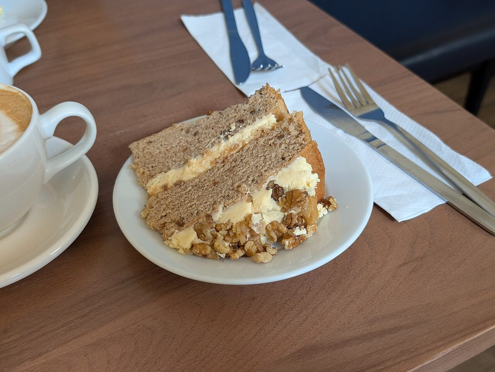

店のこと
店のこと
お店について確認できているのは、所在地とInstagramのアカウントだけです。
このページの「想像してみる」部分は、制作側が想像して書いたものです。お店の実際の様子・考え・商品とは関係がありません。
確認できていること
- 店名は「patisserie pipe(パティスリーピペ)」、業種は洋菓子店
- 所在地は岐阜県大垣市丸の内2丁目21(〒503-0888)
- 電話番号はなし。連絡はInstagramから
- 営業時間・定休日・メニュー・価格・ご予約・駐車場は準備中

想像してみる
絞り袋に入る前のもの
お菓子づくりでは、絞り袋に入る前にいろいろな材料が混ぜられ、泡立てられます。ここに並べたのは、そんな「はじまりの景色」を制作側が想像して選んだ写真です。お店の工程や使っている材料を示すものではありません。


町のこと
大垣市について
大垣市は岐阜県の西部にあり、水の豊かな「水の都」と呼ばれることがあるそうです。ただし、お店が町の水や風土と関係しているかどうかは分かりません。